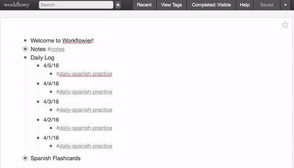

Workflowier
User Script for Workflowy.com that adds some extra features.
Project maintained by NickBusey
Hosted on GitHub Pages — Theme by mattgraham
Workflowier
User Script for Workflowy.com that adds some extra features.
Screenshots

Installation
Automated Install
Go to: https://greasyfork.org/en/scripts/18496-workflowier and click 'Install'.
Manual Install
Install Tampermonkey for Chrome. Go to workflowy.com, click the Tampermonkey icon, then click 'Add new script'. Delete everything in the large text area and copy and paste the contents of script.js instead, hit save. Reload workflowy.com.
Support
Community
https://www.reddit.com/r/Workflowier
Bugs
https://github.com/NickBusey/Workflowier/issues
Roadmap
Current features
Planned features
- -randlist hash tag that just shows a random child. This may be more useful than having to put the -rand tags on each item you want to flash through.
- Show percentage of hashtag items that are 'complete'.
- Show streak of recently created items with hashtags that have been 'completed'. This will replicate "don't break the chain" functionality.
- Better install/install directions?
- Saved settings.
- 'Always show completed items' setting toggle.
- Random links colored differently.
- Website with demo gifs
- Filters for 'shared' and 'embedded'
- Additional keyboard shortcuts
- Individual list completion (Given one todo list with a certain hashtag, calculate and display the percentage complete of that list)
- Generate charts of historical data (Given a hashtag with a data point eg: #chart-weight 150 it will chart the point over time )